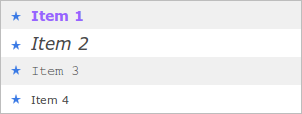

Finally, we support the SWT.ARROW style flag for Button.
This style is used together with one of SWT.TOP, SWT.BOTTOM,
SWT.LEFT, or SWT.RIGHT to create buttons with an arrow symbol.
Of course, the style of arrow buttons can be configured in a theme:
Button[ARROW] {
border: 1px solid #bdbdbd;
padding: 10px;
}
Button-ArrowIcon[UP] {
background-image: url( theme/images/arrow-up.png );
}
...
The Browser widget provides two methods to execute JavaScript,
execute() and evaluate().
Both methods are blocking and won't work with the new JEE_COMPATIBILITY mode.
Therefore, a new utility class BrowserUtil has been introduced to evaluate
JavaScript in a Browser widget in a non-blocking way.
Instead of waiting for the script to be executed, you provide a
BrowserCallback implementation that will be notified when the evaluation has
completed:
Browser browser = new Browser( parent, SWT.NONE );
...
BrowserUtil.evaluate( browser, script, new BrowserCallback() {
public void evaluationSucceeded( Object result ) {
}
public void evaluationFailed( Exception exception ) {
}
} );
The support for simple HTML markup has been extended to the List widget.
It can be activated in the same way like in Table and Label, using the constant
RWT.MARKUP_ENABLED.
Custom item height is supported too, using RWT.CUSTOM_ITEM_HEIGHT.

The theming for Shell and Composite now supports these additional
animations:
flyInTop, flyInRight, flyInBottom, flyInLeft,
flyOutTop, flyOutRight, flyOutBottom, flyOutLeft
In addition, Composite now also supports
fadeIn, fadeOut, slideIn, and slideOut.
The animations are shown when the widget either appears or disappears, respectively. Since the widget's children are animated together with its parent, it's now possible to animate any widget by placing it in a Composite. It should be noted that the animations may not run smoothly in older browsers, or when the Shell/Composite is very bulky. Using fadeIn/Our or slideIn/Out in IE7 or 8 can cause minor rendering glitches during the animation, depending on the contained widgets and their theming.
In 1.5 M3, we introduced a new API to define and start RAP applications programmatically. We've noticed that the interface names involved in this new API lead to confusion, therefore we decided to rename a couple of interfaces to make the API easier to understand and to use. This post explains the new API in more detail.
To define an application, you now have to implement the interface
ApplicationConfiguration:
public class SimpleConfiguration implements ApplicationConfiguration {
public void configure( Application application ) {
application.addEntryPoint( "/simple", SimpleEntryPoint.class, null );
application.addEntryPoint( "/other", AnotherEntryPoint.class, null );
}
}
When registered as an OSGi service, an application instance will be started from this
configuration by the org.eclipse.rap.rwt.osgi bundle.
Also, the param-name for registering an ApplicationConfiguration in a
web.xml has changed. It is kept in the constant
ApplicationConfiguration.CONFIGURATION_PARAM.
The JavaDoc of this constant contains a code example.
Alternatively, an application can also be started programmatically using an
ApplicationRunner:
ApplicationConfiguration configuration = new SimpleConfiguration();
ApplicationRunner runner = new ApplicationRunner( configuration, servletContext );
runner.start();